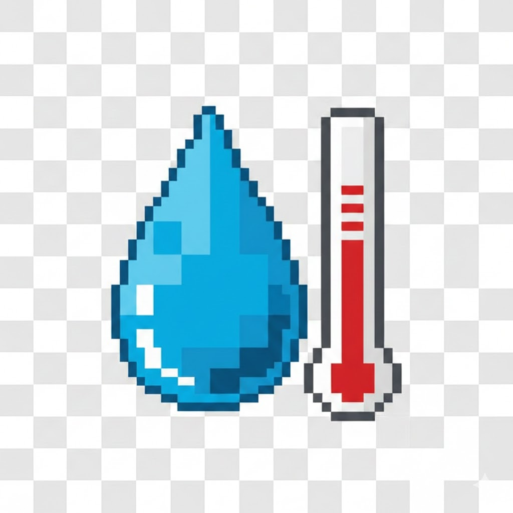

נתוני מזג אויר בישראל
טמפרטורות מינימום, מקסימום וגשם, ברזולוציה שעתית
נתונים מתוך
השמ"ט אינו נושא באחריות כלשהי למידע ואינו צד לפרסומו
מפת תחנות מזג אוויר
נתוני תחנות - גרפים
גשם מצטבר לעונה ביחס לצפי
גשם אזורי - מצטבר עונתי
טמפרטורה אזורית
מקסימום
מינימום
שיאי מזג אוויר